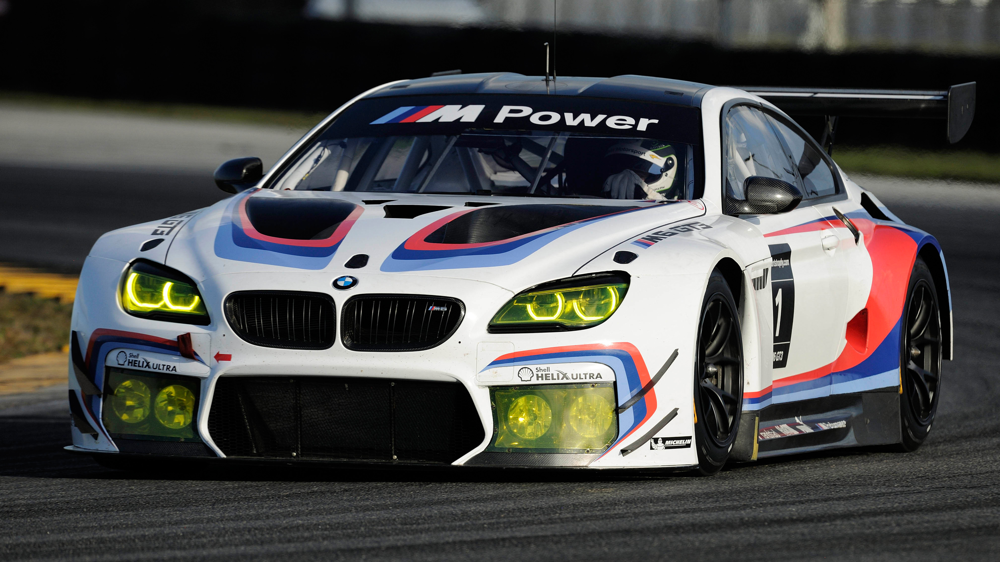
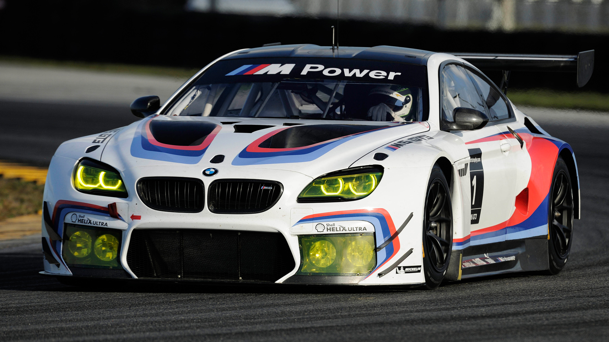

BMW, short for Bayerische Motoren Werke AG, is a prestigious German multinational company known for producing luxury vehicles and motorcycles. Established in 1916, BMW initially manufactured aircraft engines before transitioning to motorcycles in the 1920s and automobiles in the 1930s. Post-World War II, BMW resumed its motorcycle production in 1948 and car production in 1952, achieving a significant turnaround in the 1960s with the launch of the BMW New Class, compact sedans that cemented BMW's reputation for sportiness and engineering excellence. The modern era saw BMW expand its lineup with popular models like the 3 Series, 5 Series, and 7 Series, and the acquisition of the MINI brand and Rolls-Royce in the late 1990s. BMW's diverse product lineup includes luxury sedans, sporty coupes, SUVs, electric vehicles, and high-performance M models, alongside a robust range of motorcycles. Renowned for its advanced engine technology, electric mobility innovations, and cutting-edge ConnectedDrive infotainment system, BMW emphasizes performance and sustainability. Competing with brands like Mercedes-Benz and Audi, BMW is committed to reducing its carbon footprint and advancing autonomous driving technologies. Its distinctive design elements, including the iconic kidney grilles and driver-centric interiors, coupled with the brand slogan “The Ultimate Driving Machine,” reflect BMW's dedication to delivering superior driving pleasure and engineering excellence.
 
